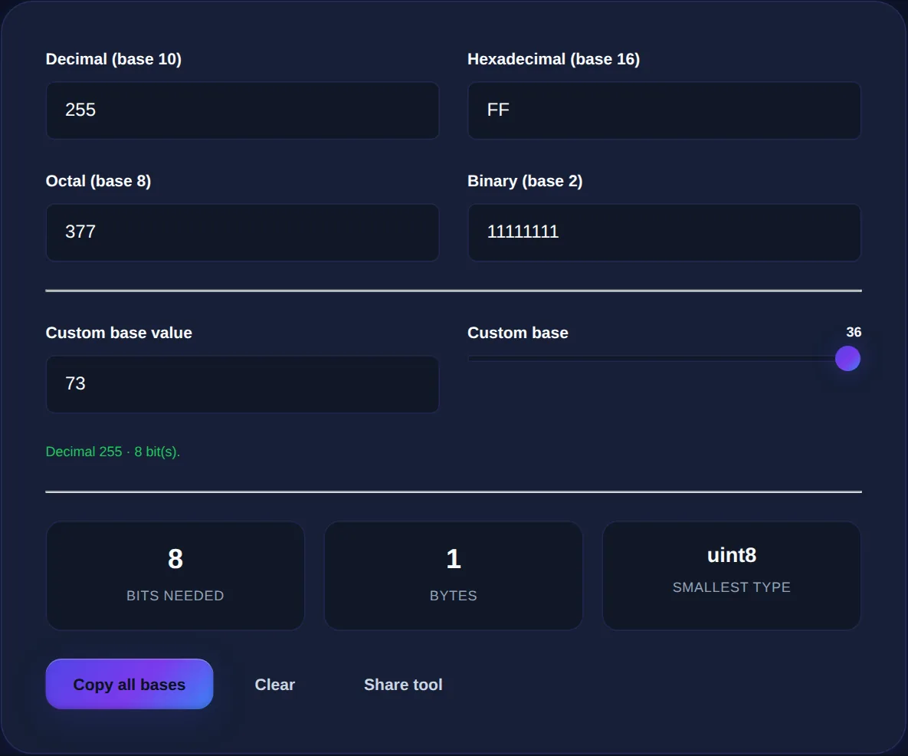

Binary, Decimal, Hex: How to Convert Between Number Bases
What a number base really is, why computers use binary and hex, and how to convert between them with confidence.
By Mubasher Hussain · Published 2026-07-29 · Updated 2026-09-01 · 1061 words · about 5 minute read
A number base is simply how many different digits you count with before you carry over to a new place. We use base 10 (decimal) with ten digits, 0 through 9, because we have ten fingers. Computers use base 2 (binary) with just two digits, 0 and 1, and programmers often use base 16 (hexadecimal) with sixteen. Converting between these is a core skill in computing, and the Number Base Converter does it instantly. This article explains what bases really are and how conversion works.
The numbers themselves do not change, 255 apples are 255 apples whether you write the quantity as 255, as 11111111, or as FF. Only the notation changes. Understanding that is the key to demystifying binary and hex.
What a number base actually means
In any base, the position of a digit gives it a value that is a power of the base. In decimal, the number 253 means 2 hundreds, 5 tens and 3 ones, that is, 2×10² + 5×10¹ + 3×10⁰. Binary works identically but with powers of two: the binary number 1011 means 1×8 + 0×4 + 1×2 + 1×1, which is 11 in decimal. Hexadecimal uses powers of sixteen. Once you see that every base is just place-value with a different multiplier, converting between them becomes a mechanical process rather than magic.

Why computers use binary
Computers use binary because their most basic components have two stable states, on or off, high voltage or low, current or no current. Representing numbers with two digits maps perfectly onto this physical reality: a 1 is on, a 0 is off. Every number, letter, image and instruction inside a computer is ultimately stored as patterns of these binary digits, or bits. Binary is not a human preference imposed on machines; it is the natural language of electronic switches, which is why it sits underneath everything computers do.
Why programmers use hexadecimal
Binary is natural for computers but painful for humans, long strings of ones and zeros are hard to read and easy to miscount. Hexadecimal is a compact shorthand for binary that solves this. Because sixteen is two to the fourth power, each hex digit corresponds to exactly four binary digits, so hex expresses binary data in a quarter of the length with no loss. This is why hex appears wherever people need to read raw computer data: memory addresses, colour codes, byte values and more.
- Hex digits run 0-9 then A-F, where A is 10, B is 11, up to F which is 15.
- Each hex digit packs exactly four bits, so FF is 11111111 in binary, or 255 in decimal.
- A byte, eight bits, is neatly written as two hex digits.
Web colours like #FF8800 are hexadecimal: two hex digits each for red, green and blue, every pair a value from 0 to 255. If you have ever picked a colour by its hex code, you have used base 16 without thinking about it.
How conversion works
Converting from another base to decimal means multiplying each digit by its place value and adding the results, that is how 1011 in binary becomes 11. Converting from decimal to another base means repeatedly dividing by the base and collecting the remainders. These are reliable hand methods, but they are fiddly and error-prone for large numbers, which is exactly where a converter earns its keep: it applies the arithmetic perfectly and instantly, and can show the same value in binary, decimal and hex side by side so you can see how they relate.
Convert numbers between binary, decimal, hexadecimal and other bases instantly, entirely in your browser.
Where base conversion matters
Base conversion is not just academic. Web developers convert hex colour codes; the underlying values connect directly to a color picker. Anyone working with character encoding meets the numeric codes behind letters, which a text to ASCII tool exposes. Programmers read hex in memory dumps, network packets and file formats. Even understanding file permissions on many systems involves a little base arithmetic. In each case, being able to move a value between binary, decimal and hex is what lets you read what the computer is really doing.
Reading data in the wild: bytes, colours and permissions
Base conversion stops being abstract the moment you meet real computer data, which is displayed in whichever base is most convenient for the job. A single byte holds eight bits and can represent 256 values, from 0 to 255, which is why so many limits in computing are 255 or 256, colour channels, for instance. Those colour channels are written in hexadecimal precisely because two hex digits map exactly onto one byte, so a web colour is three bytes shown as six hex characters. Recognising this lets you read a colour code as three numbers rather than an opaque string.
The same fluency helps elsewhere. Memory addresses and raw data in a debugger are shown in hex because it packs binary compactly and aligns neatly with byte boundaries. On Unix-like systems, file permissions are often written in octal, base 8, where each digit encodes read, write and execute bits as a small binary pattern, which is why permissions like 755 or 644 look the way they do. Network and character data, too, are frequently presented in hex. In every one of these cases, the ability to move a value between binary, decimal and hex is what turns a cryptic string into meaningful information. You do not need to do the arithmetic by hand, a converter is faster and error-free, but understanding what the bases mean is what lets you interpret what you are looking at rather than just copying it around blindly.
To recap: a number base is just how many digits you count with before carrying, and every base uses the same place-value idea with a different multiplier. Computers use binary because their switches are two-state, and programmers use hexadecimal as a compact, four-bits-per-digit shorthand for that binary. The number never changes, only its clothes, and a converter lets you dress the same value in whichever base the task in front of you calls for.